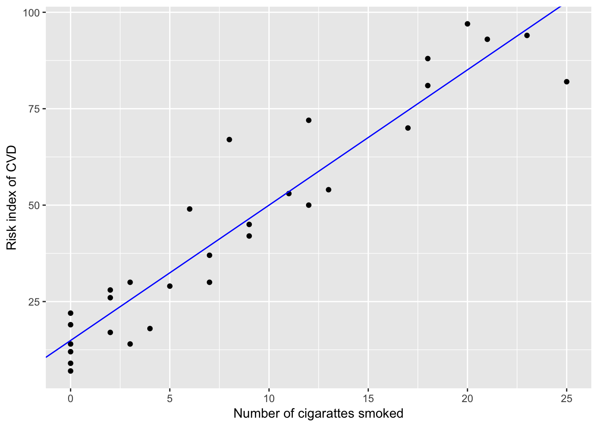
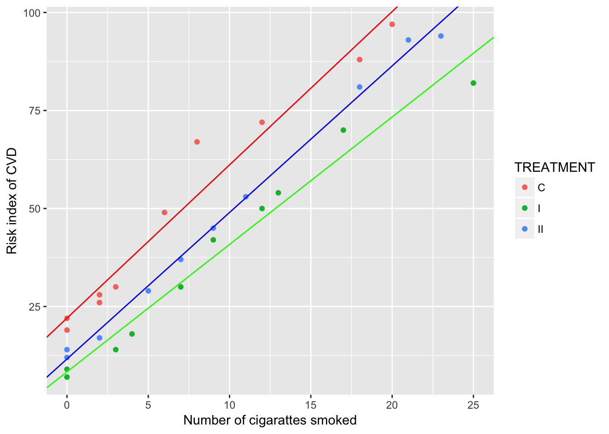

data165 = read.table("./data/ex16-5.TXT", header = T)library(ggplot2)
lm.fit = lm(RISK~NOCIG, data=data165)
coefEst = coef(lm.fit)
ggplot(data165, aes(x=NOCIG, y=RISK)) +
geom_point() +
geom_abline(intercept = coefEst[1], slope = coefEst[2], col="blue") +
xlab("Number of cigarattes smoked") +
ylab("Risk index of CVD")
lmCov = lm(RISK~NOCIG+TREATMENT+NOCIG:TREATMENT, data=data165)
anova(lmCov)## Analysis of Variance Table
##
## Response: RISK
## Df Sum Sq Mean Sq F value Pr(>F)
## NOCIG 1 21410.9 21410.9 1055.3276 < 2.2e-16 ***
## TREATMENT 2 1820.1 910.1 44.8561 7.814e-09 ***
## NOCIG:TREATMENT 2 127.1 63.5 3.1319 0.06186 .
## Residuals 24 486.9 20.3
## ---
## Signif. codes: 0 '***' 0.001 '**' 0.01 '*' 0.05 '.' 0.1 ' ' 1pval = as.character(anova(lmCov)$`Pr(>F)`); pval## [1] "2.37964027689756e-21" "7.81358987634045e-09" "0.0618641631946161"
## [4] NAThe p-value for the interaction term (NOCIG:TREATMENT) is 0.0618641631946161 > 0.05. We cannot reject the \(H_{0}\) that the slopes for the three treatments are eqaul.
Below is a scatterplot grouped by treatments, also showing a very weak evidence of equal slopes for the three treatments.
coefC = coef(lm(RISK~NOCIG, data=data165[data165$TREATMENT=="C", ])); coefC## (Intercept) NOCIG
## 22.040757 3.909753coefI = coef(lm(RISK~NOCIG, data=data165[data165$TREATMENT=="I", ])); coefI## (Intercept) NOCIG
## 8.334266 3.251748coefII = coef(lm(RISK~NOCIG, data=data165[data165$TREATMENT=="II", ])); coefII## (Intercept) NOCIG
## 11.610362 3.738504ggplot(data165, aes(x=NOCIG, y=RISK, col=TREATMENT)) +
geom_point() +
geom_abline(intercept = coefC[1], slope = coefC[2], col="red") +
geom_abline(intercept = coefI[1], slope = coefI[2], col="green") +
geom_abline(intercept = coefII[1], slope = coefII[2], col="blue") +
xlab("Number of cigarattes smoked") +
ylab("Risk index of CVD")
lmCov = lm(RISK~NOCIG+TREATMENT, data=data165)
anova(lmCov)## Analysis of Variance Table
##
## Response: RISK
## Df Sum Sq Mean Sq F value Pr(>F)
## NOCIG 1 21410.9 21410.9 906.642 < 2.2e-16 ***
## TREATMENT 2 1820.1 910.1 38.536 1.674e-08 ***
## Residuals 26 614.0 23.6
## ---
## Signif. codes: 0 '***' 0.001 '**' 0.01 '*' 0.05 '.' 0.1 ' ' 1pval = as.character(anova(lmCov)$`Pr(>F)`); pval## [1] "9.64564444508505e-22" "1.67413337584042e-08" NAYes. The p-value for TREATMENT is 1.67413337584042e-08, indicating a strong evidence of difference in the mean risk index for the three treatments.